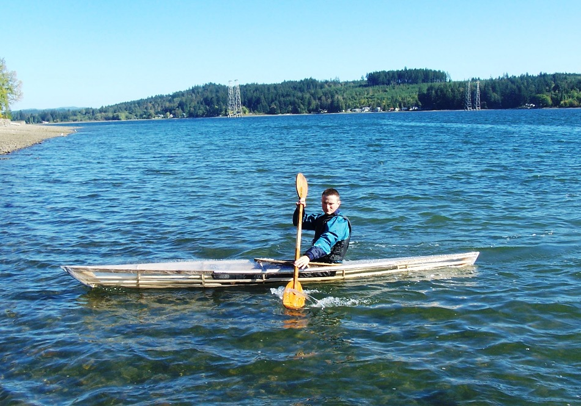

| Sea Bee 13 by Falk Bock (US) | Menu Previous Page Next Page |
|

Falk, from Tacoma, Washington built a Sea Bee 13 in under 6 hours as part of a boatbuilding / racing competition. Falk describes the competition ...
" The local Maritime Festival organizes a "Quick and Dirty Boatbuilding Competition" every year, which I've been entering. The idea is that you get a pile of materials (plywood and 2x4s) and you have 6 hours to build a boat, which you then race around a short course on the bay." .....Well, the boatbuilding competition has come and gone, and this year we actually won the race! Thanks for suggesting the Sea Bee, that is one sweet little boat! The build wasn't much harder than the Yarra ( last years race) - there are more strakes, but fewer frames, so the number of joints is about the same. Very nice handling, nice lines, I'm just all-out impressed by that boat. Total build time for three people: five-and-a-half hours. I took the "Barely There" out for a paddle yesterday, and what impressed me the most was the balance - in ten knots of wind, there was zero weathervaning. It tracked absolutely straight. The technical stuff: It's 6 mil vinyl over poplar stringers on 1/2" CDX plywood frames, held together with #6 drywall screws and 1/2" staples." |
|